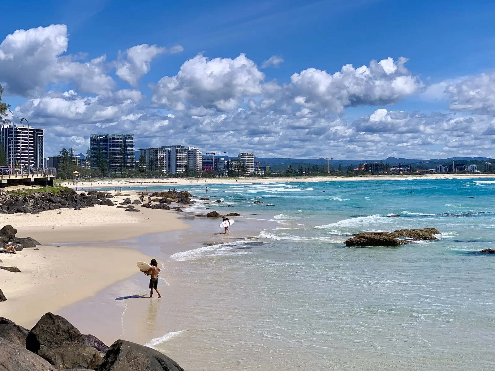

Kirra
Gold Coast, Australie · surf

Tube légendaire de la Gold Coast, qui s’allume par houle de cyclone. Célèbre dans le monde entier.
- Lieu
- Gold Coast, Australie
- Niveau
- Expert
- Activités
- surf
- Type d'eau
- Mer / océan
- Coordonnées
- -28.17, 153.53 (position approximative du secteur)
Dangers à connaître
- Tube rapide.
- Foule.
Le conseil d'Ocean Buddy
Quand Kirra marche, le line-up est plein de pros : patience.
Ouvrir dans Ocean Buddy Télécharger sur l'App Store
Source : Fiche Ocean Buddy · septembre 2026 · à vérifier localement.